1.Cómo usar este manual
Este manual explica, paso a paso, cómo trabajar con el Capataz si usted tiene el rol de Supervisor. No hace falta tener experiencia con programas de computadora: cada tarea se explica con pasos cortos y con imágenes de la pantalla.
1.1Cómo leer este manual
Los pasos están numerados. Haga una sola cosa por paso y siga el orden.
Lo que está en negrita es un texto que usted verá escrito en la pantalla: un botón, un menú, un campo o un mensaje. Búsquelo en la pantalla con las mismas letras.
Una tecla del teclado se muestra así: Enter, F6, Esc.
Las imágenes tienen círculos rojos con números. Cuando el texto dice «el círculo 2», se refiere al círculo con ese número en la imagen. Bajo cada imagen hay una lista que explica qué señala cada número.
Hay tres tipos de recuadros de color: el ámbar (importante, algo que no debe olvidar), el rojo (qué hacer si algo sale mal) y el verde (un consejo para trabajar más fácil).
Las imágenes se tomaron con una empresa de ejemplo (FRIGORÍFICO EJEMPLO S.R.L.) y con datos inventados. En su computadora verá el nombre de su empresa y sus propios datos.
Si necesita ayuda que este manual no resuelve, consulte a su administrador del sistema.
1.2Lo básico del mouse y del teclado
| Palabra | Qué significa |
|---|---|
| Hacer clic | Poner la flechita del mouse sobre un botón, campo o menú y pulsar una vez el botón izquierdo del mouse. |
| Doble clic | Pulsar el botón izquierdo dos veces seguidas y rápido. En las listas de boletas y de catálogos, el doble clic sobre una fila abre la ventana para editarla. |
| Seleccionar una fila | Hacer clic sobre ella. La fila elegida se pinta de azul. |
| Lista desplegable | Un campo con una flechita (▼) al lado derecho. Al hacer clic se abre una lista de opciones y usted elige una con un clic. |
| Casilla de verificación | Un cuadradito que se marca o se desmarca con un clic. |
| Campo de fecha | Muestra día/mes/año, por ejemplo 05/10/2026. Haga clic en la flechita (▼) para abrir un calendario y haga clic en el día que necesita. |
| Rueda del mouse | Girarla hacia atrás o hacia adelante mueve las listas largas hacia abajo o hacia arriba. |
| Enter | Confirma o pasa al paso siguiente. En algunas ventanas hace lo mismo que pulsar el botón principal. |
| Esc | Cierra la ventana que está abierta sin hacer cambios. |
| Tab | Pasa al siguiente campo de la ventana. |
| F2, F3, F4… | Las teclas de función están en la fila de arriba del teclado. En algunas computadoras portátiles hay que mantener pulsada la tecla Fn mientras se pulsa la tecla F. |
1.3Cómo avisa el sistema cuando algo falta o está mal
Círculo rojo con una equis blanca junto a un campo: significa que ese dato falta o es incorrecto. Ponga la flechita del mouse sobre el círculo, sin hacer clic, y aparecerá un texto que explica qué corregir.
Ventana con un mensaje: léalo con calma y pulse el botón que corresponde (por ejemplo Aceptar, Sí o No). Algunas ventanas hacen una pregunta antes de una acción importante, como anular una boleta.
Línea de color bajo una lista: algunas pantallas muestran debajo un resumen, por ejemplo 37 boleta(s) encontrada(s)., o un aviso en naranja.
1.4Qué puede hacer un Supervisor
El Supervisor puede hacer todo lo que hace un Operador y, además, controlar y corregir el trabajo ya registrado. Esta tabla muestra la diferencia:
| Tarea | Operador | Supervisor |
|---|---|---|
| Pesar reses y grabar boletas | Sí | Sí |
| Imprimir y reimprimir boletas | Sí | Sí |
| Ver el historial de pesajes de un día | Sí | Sí |
| Crear un ganadero o un cliente nuevo desde la pantalla de pesaje | Sí | Sí |
| Buscar boletas ya grabadas | No | Sí |
| Corregir los datos de una boleta | No | Sí |
| Anular una boleta | No | Sí |
| Emitir reportes (pantalla, impresión, PDF y Excel) | No | Sí |
| Mantener las listas de ganaderos, clientes y fleteros | No | Sí |
| Consultar el visor de auditoría | No | Sí |
Hay tareas que corresponden solo al Administrador, y por eso usted no verá sus menús: crear o modificar usuarios, cambiar los datos de la empresa, configurar la balanza y la impresora, hacer o restaurar copias de seguridad, importar datos del sistema anterior y revisar los registros de funcionamiento del sistema. Si necesita alguna de ellas, consulte a su administrador del sistema.
Con su rol usted puede cambiar y anular datos que afectan los reportes y las boletas entregadas a los clientes. Trabaje con cuidado y revise cada dato antes de guardar. El sistema registra quién hizo cada cambio y cuándo (ver el capítulo «Visor de auditoría»).
2.Entrar al sistema y pantalla de inicio
2.1Entrar al sistema
Siga estos pasos cada vez que empiece a trabajar.
Abra Capataz desde el escritorio o desde el menú Inicio de Windows.
Escriba su usuario en el campo Usuario (círculo 1).

Figura 1. Pantalla Iniciar sesión con los campos Usuario y Contraseña y los botones Ingresar y Salir 1Escriba su usuario2Escriba su contraseña3Pulse IngresarEscriba su contraseña en el campo Contraseña (círculo 2).
Pulse el botón Ingresar (círculo 3) o pulse Enter.
Su usuario y su contraseña son personales. No los comparta: todo lo que se haga con su usuario quedará registrado a su nombre.
Si aparece Usuario o contraseña incorrectos.:
Revise que escribió bien el usuario y la contraseña. Las mayúsculas y minúsculas importan.
Si aparece el aviso Bloq Mayús está activado, pulse la tecla Bloq Mayús para apagarlo y escriba de nuevo.
Después de 5 intentos fallidos seguidos, el usuario se bloquea unos minutos y aparece Usuario bloqueado temporalmente por intentos fallidos. Intente de nuevo en N minuto(s). Espere ese tiempo o pida a su administrador del sistema que le restablezca la contraseña.
2.2Si es su primer ingreso: cambiar la contraseña
La primera vez que entre, o después de que el administrador le restablezca la contraseña, el sistema le pedirá que elija una contraseña nueva. Aparece la ventana Cambio de contraseña requerido, con el aviso Debe cambiar su contraseña para continuar.
En Contraseña actual escriba la contraseña que le dio el administrador (círculo 1).
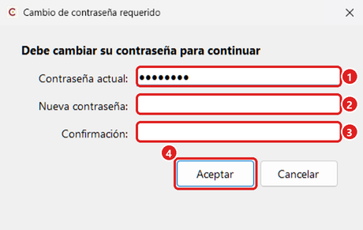
Figura 2. Ventana para cambiar la contraseña obligatoriamente 1Contraseña actual (la temporal)2Su contraseña nueva3Repita la contraseña nueva4Pulse AceptarEn Nueva contraseña escriba la contraseña que usted elija (círculo 2).
En Confirmación vuelva a escribir la misma contraseña nueva (círculo 3).
Pulse Aceptar (círculo 4).
La contraseña nueva debe tener entre 6 y 100 caracteres, no puede ser igual a la anterior y no puede ser igual a su nombre de usuario.
Elija una contraseña que usted recuerde y que otras personas no puedan adivinar fácilmente. Si más adelante quiere cambiarla, use el menú Sesión y la opción Cambiar contraseña….
2.3La pantalla de inicio
Después de ingresar verá la pantalla de inicio. Arriba están el nombre de su empresa y la barra de menús (círculo 1). En el centro hay tres tarjetas grandes con las tareas más usadas (círculos 2, 3 y 4). Puede hacer clic en una tarjeta o usar la tecla que dice en su esquina.
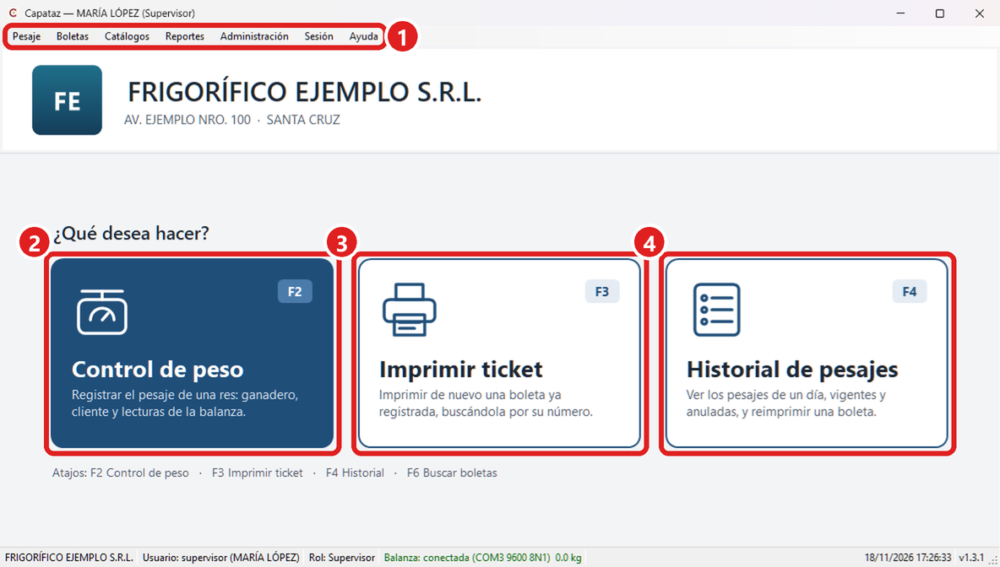
Abajo hay una barra de estado. De izquierda a derecha muestra el nombre de la empresa, su usuario, su rol, el estado de la balanza con el peso que está leyendo, la fecha y hora de la computadora y la versión del sistema. La imagen muestra la parte izquierda de la barra.
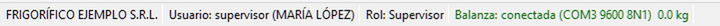
2.4Los menús que usted ve
En su pantalla verá los menús Pesaje, Boletas, Catálogos, Reportes, Administración, Sesión y Ayuda. El menú Utilitarios no aparece, porque es solo para el Administrador.
| Menú | Opciones | Para qué sirve |
|---|---|---|
| Pesaje | Registrar pesaje (F2) y Historial de pesajes (F4) | Pesar reses y ver lo pesado en un día. |
| Boletas | Reimprimir boleta (F3), Buscar / editar boleta (F6) y Anular boleta | Volver a imprimir, buscar, corregir y anular boletas. |
| Catálogos | Ganaderos, Clientes y Fleteros | Mantener las listas de personas y empresas. |
| Reportes | Reportes de pesaje, Pesajes por raza y Boletas anuladas | Emitir reportes. |
| Administración | Visor de auditoría | Consultar quién hizo qué y cuándo. Es la única opción de este menú que usted ve. |
| Sesión | Cambiar contraseña…, Cerrar sesión (Ctrl+Shift+L) y Salir | Cambiar su contraseña, dejar paso a otra persona o cerrar el sistema. |
| Ayuda | Acerca de… | Ver la versión del sistema. |
Para abrir un menú, haga clic en su nombre y luego haga clic en la opción que necesita.
2.5Cerrar sesión y salir
Cuando otra persona vaya a usar la computadora, abra el menú Sesión y elija Cerrar sesión (círculo 1).
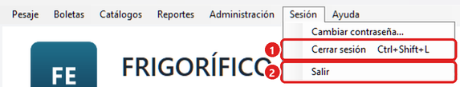
Figura 5. Menú Sesión desplegado con Cambiar contraseña, Cerrar sesión y Salir 1Cerrar sesión2SalirEl sistema pregunta si está seguro. Pulse Sí. Volverá la pantalla de inicio de sesión.
Al terminar el día, abra el menú Sesión y elija Salir (círculo 2).
Cierre siempre el sistema con Salir antes de apagar la computadora.
3.El trabajo diario de pesaje
Un supervisor también puede pesar, igual que un operador. Este capítulo es solo un resumen para que recuerde el camino. El detalle completo, con imágenes de cada paso, está en el Manual del Operador.
3.1Resumen de un pesaje
Abra la pantalla de pesaje: en el menú Pesaje elija Registrar pesaje, o pulse F2, o haga clic en la tarjeta Control de peso.
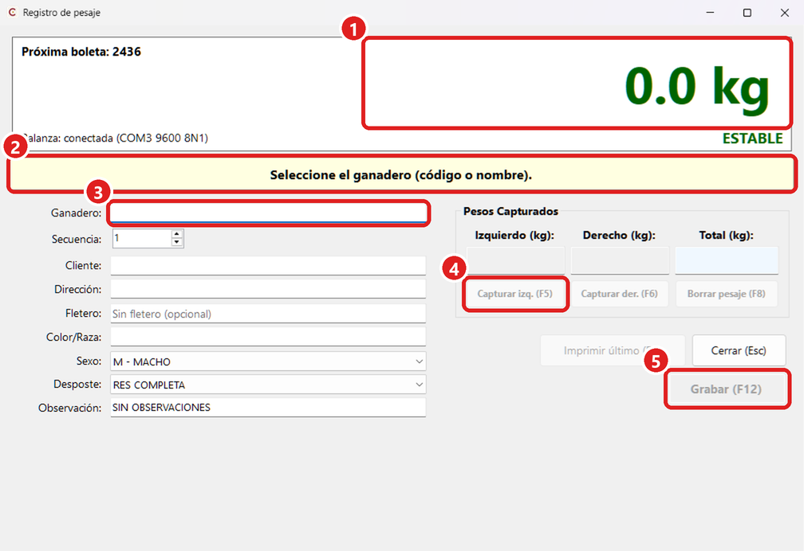
Figura 6. Pantalla de registro de pesaje con el peso en vivo, la frase guía, los datos del animal y los botones de captura y de grabar 1Peso en vivo de la balanza2Frase guía: qué hacer ahora3Ganadero (y luego Cliente)4Capturar el peso (F5 / F6)5Grabar (F12)Mire la frase guía (círculo 2): le dice qué hacer a continuación.
En Ganadero (círculo 3) escriba el código o parte del nombre y elíjalo de la lista.
En Cliente elija al cliente de la misma forma. La Dirección se completa sola.
Si hubo transporte, elija el Fletero de la lista. Es opcional, pero si escribe algo en ese campo debe elegirlo de la lista o borrar el texto: si no, el sistema no deja grabar.
Revise Color/Raza, Sexo y Desposte (RES COMPLETA o MEDIA RES). Si su empresa pesa un solo tipo, el campo Desposte no aparece: el sistema usa ese tipo.
Espere a que la balanza muestre ESTABLE junto al peso (círculo 1).
Pulse F5 para capturar el lado izquierdo (círculo 4). Si es MEDIA RES, puede usar F5 o F6: se captura un solo lado.
Si es res completa, retire el primer lado de la balanza, cuelgue el otro y, cuando muestre ESTABLE, pulse F6.
Cuando la frase guía diga Listo para grabar (F12)., pulse F12 (círculo 5). Mientras el botón Grabar (F12) está gris, todavía no se puede grabar: lea la frase guía para saber qué falta.
Para imprimir la boleta, pulse F9, salvo que su empresa tenga la impresión automática activada.
Una vez grabada la boleta, los pesos ya no se pueden cambiar. Si se equivocó antes de grabar, pulse Borrar pesaje (F8) y empiece de nuevo con ese animal. Si el error se descubre después de grabar, hay que anular la boleta (capítulo «Anular una boleta») y pesar otra vez.
En la pantalla de pesaje los kilos pueden verse con punto decimal (por ejemplo 240.0) o con coma (240,0), según la configuración regional de Windows de la computadora. En las boletas impresas, en las listas y en los reportes siempre se ven con coma (240,0). Es el mismo número.
Si la frase guía dice Balanza en MODO SIMULADOR: solo un administrador puede capturar y grabar., la balanza está configurada como simulador de pruebas y no se puede pesar. Avise a su administrador del sistema.
Si dice Elija el fletero de la lista o borre el texto., el campo Fletero tiene un texto escrito que no se eligió de la lista. Elija al fletero o borre el texto y el botón Grabar (F12) se vuelve a encender.
Con la balanza vacía (hasta 2,0 kg) la frase guía le dice qué lado capturar, por ejemplo Capture el lado izquierdo (F5) y el derecho (F6). Si dice Peso fuera de rango (10,0 a 600,0 kg)., hay un peso estable sobre la balanza que no corresponde a un lado de res: vea en el capítulo «Si algo sale mal» qué hacer cuando un operador le avisa de un peso fuera de rango.
3.2Ver lo pesado en el día: Historial de pesajes
El historial muestra los pesajes de un día, el más reciente primero.
En el menú Pesaje elija Historial de pesajes, o pulse F4.
Al abrir, aparece el día de hoy. Para ver otro día, cambie la fecha en Día (círculo 1).
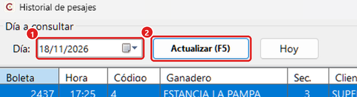
Figura 7. Selector de día y botones Actualizar y Hoy del historial de pesajes 1Día que desea ver2Actualizar la listaPulse Actualizar (F5) (círculo 2). Para volver al día de hoy, pulse Hoy.
Para volver a imprimir una boleta, haga clic en su fila y pulse Reimprimir (F9) (círculo 3).
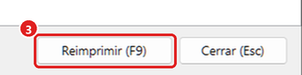
Figura 8. Botones Reimprimir y Cerrar del historial de pesajes 3Reimprimir la boleta elegidaPara salir, pulse Cerrar (Esc).
Las boletas anuladas se ven en gris, con el estado ANULADA. Si en un día hay más de 500 pesajes, se muestran los 500 más recientes.
3.3Reimprimir una boleta por su número
En el menú Boletas elija Reimprimir boleta, o pulse F3.
Escriba el Número de boleta (círculo 1) y pulse Buscar (Enter) (círculo 2) o la tecla Enter. Aparece un resumen de la boleta.
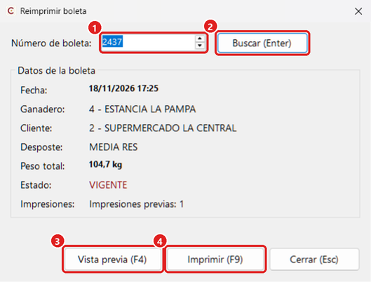
Figura 9. Ventana Reimprimir boleta con el número buscado y el resumen de la boleta 1Número de boleta2Buscar (Enter)3Vista previa (F4)4Imprimir (F9)Si quiere verla antes de imprimir, pulse Vista previa (F4) (círculo 3) o la tecla F4.
Pulse Imprimir (F9) (círculo 4) o la tecla F9.
Toda boleta que se imprime por segunda vez o más sale con una leyenda que dice REIMPRESIÓN y el número de impresión, con la fecha y la hora. Si la boleta está anulada, la reimpresión también dice ANULADA y el motivo.
4.Buscar boletas
La ventana Buscar / editar boletas sirve para encontrar cualquier boleta ya grabada. Desde ella también se corrigen (capítulo «Editar una boleta») y se anulan (capítulo «Anular una boleta») las boletas.
4.1Abrir la ventana
En el menú Boletas elija Buscar / editar boleta (círculo 1), o pulse F6 en la pantalla de inicio.
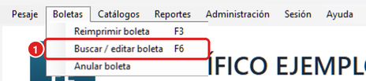
Figura 10. Menú Boletas desplegado con Reimprimir boleta, Buscar / editar boleta y Anular boleta 1Buscar / editar boleta (F6)
La opción Anular boleta del menú Boletas abre esta misma ventana. Es lo mismo: la boleta se anula luego de buscarla y elegirla.
Al abrirse, la ventana busca automáticamente las boletas de hoy. Está dividida en tres partes: arriba, los filtros (círculo 1); en el centro, la lista de resultados (círculo 2), que también se llama «grilla» o «tabla»; abajo, un resumen y los botones Editar (F4), Anular (F8) y Cerrar (Esc) (círculo 3).
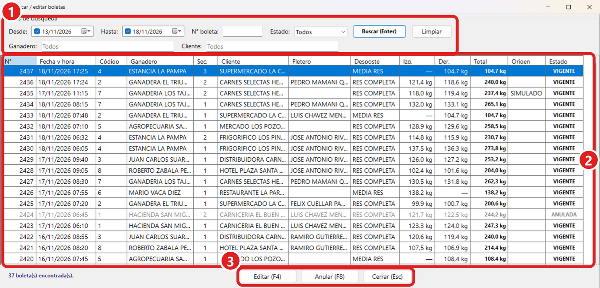
En las imágenes, las fechas están ampliadas para que se vean varios días. Cuando usted abra la ventana, Desde y Hasta tendrán la fecha de hoy.
4.2Cómo usar los filtros
Un filtro es una condición que usted pone para que la lista muestre solo lo que busca, por ejemplo «solo las boletas de un ganadero». Estos son los filtros:
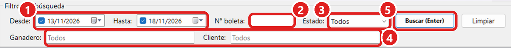
| Filtro | Para qué sirve |
|---|---|
| Desde y Hasta (círculo 1) | La primera y la última fecha. Se incluyen los dos días completos. Si desmarca la casilla que está al lado de una fecha, esa fecha no se usa y no hay límite de ese lado. |
| N° boleta (círculo 2) | El número de una boleta. Solo acepta números. |
| Estado (círculo 3) | Todos, Vigente (boletas válidas) o Anulado (boletas anuladas). |
| Ganadero y Cliente (círculo 4) | Muestran solo las boletas de esa persona o empresa. Vienen en Todos. |
Los filtros se suman: la lista muestra solo las boletas que cumplen todos los filtros que usted puso. Por ejemplo, si pone un ganadero y el estado Anulado, verá las boletas anuladas de ese ganadero.
Si usted escribe un N° boleta, el sistema ignora las fechas. Así encuentra la boleta aunque no recuerde en qué día se pesó.
Elegir un ganadero o un cliente
Haga clic en el campo Ganadero (círculo 1).
Escriba una parte del código o del nombre. No importan las mayúsculas ni los acentos.
Cuando aparezca la lista de coincidencias (círculo 2), haga clic en el ganadero correcto. También puede bajar con la flecha del teclado y pulsar Enter.
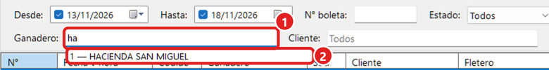
Figura 13. Campo Ganadero con las letras «ha» escritas y la lista de coincidencias desplegada 1Escriba una parte del nombre2Haga clic en el ganadero correctoCompruebe que el campo muestra el código, una raya y el nombre, por ejemplo 1 — HACIENDA SAN MIGUEL.
El campo Cliente se usa igual.
El filtro de ganadero o de cliente solo funciona cuando usted elige a la persona de la lista (el campo queda con el código, la raya y el nombre). Si deja el texto a medias, sin elegirlo, el sistema no lo usa y mostrará todas las boletas.
Para quitar un ganadero o un cliente del filtro, borre el texto del campo: volverá a decir Todos.
Buscar y empezar de nuevo
Ponga los filtros que necesite.
Pulse Buscar (Enter) (círculo 5 de la figura de los filtros) o pulse Enter.
Para empezar de nuevo, pulse Limpiar: las fechas vuelven al día de hoy, el resto de los filtros se borra y la lista se vuelve a cargar.
4.3Cómo leer la lista de resultados
La lista muestra las boletas con la más nueva primero. Cada fila es una boleta:
| Columna | Qué muestra |
|---|---|
| N° | El número de la boleta. |
| Fecha y hora | Cuándo se grabó. |
| Código y Ganadero | El código y el nombre del ganadero. |
| Sec. | La secuencia: el número de ese animal entre los del mismo ganadero en el día (1, 2, 3…). |
| Cliente y Fletero | El cliente y, si lo hubo, el fletero. |
| Desposte | RES COMPLETA o MEDIA RES. Si su empresa pesa un solo tipo y todas las boletas de la lista son de ese tipo, esta columna no aparece. |
| Izq. y Der. | El peso del lado izquierdo y del derecho. En una media res solo hay un lado; el otro muestra una raya (—). |
| Total | El peso total de la boleta. |
| Origen | Vacío si se pesó con la balanza real. Dice SIMULADO si se pesó con el simulador de pruebas y IMPORTADA si viene del sistema anterior. |
| Estado | VIGENTE o ANULADA. |
Debajo de la lista, el sistema escribe un resumen:
N boleta(s) encontrada(s). Por ejemplo, 37 boleta(s) encontrada(s).
No se encontraron boletas. Ninguna boleta cumple los filtros. Revise las fechas.
Se muestran las primeras 200 boletas; refine la búsqueda. (en naranja). La ventana muestra como máximo 200 boletas, las más nuevas. Ponga más filtros (por ejemplo, un rango de fechas más corto) para ver las demás.
Las boletas anuladas
Una boleta anulada se ve en gris y con el estado ANULADA. Para verlas, elija el estado Anulado (círculo 1) y pulse Buscar (Enter). En la imagen, la fila gris (círculo 2) es una boleta anulada; la otra está pintada de azul porque está elegida.
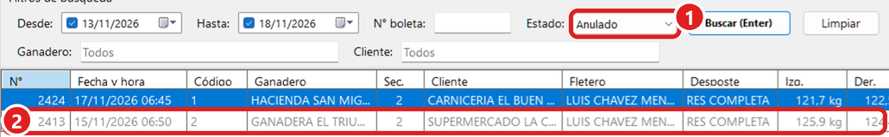
Cuando usted hace clic en una boleta anulada (círculo 3), los botones Editar (F4) y Anular (F8) (círculos 1 y 2) quedan apagados (grises): una boleta anulada no se puede editar ni anular otra vez.
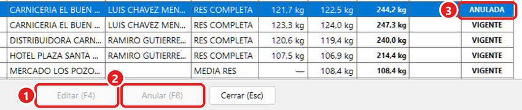
4.4Ejemplos de búsquedas
Ver las boletas de un ganadero
En Ganadero elija al ganadero de la lista.
Ajuste las fechas Desde y Hasta.
Pulse Buscar (Enter).
Encontrar una boleta por su número
Escriba el número en N° boleta.
Pulse Buscar (Enter). No importan las fechas.
4.5Teclas útiles en esta ventana
| Tecla | Qué hace |
|---|---|
| Enter | Si el cursor está en un filtro, busca. Si usted hizo clic en la lista, abre la edición de la boleta elegida. |
| F4 | Edita la boleta elegida (igual que el botón Editar (F4)). |
| F8 | Anula la boleta elegida (igual que el botón Anular (F8)). |
| Esc | Cierra la ventana. |
El doble clic sobre una fila también abre la edición.
La lista sale vacía: lo más probable es que las fechas sean solo las de hoy. Amplíe Desde o escriba el N° boleta.
Escribí un ganadero y la lista no cambió: debe elegir al ganadero de la lista, no solo escribirlo.
Ingrese un número de boleta válido.: en N° boleta solo se aceptan números mayores que cero.
La fecha final no puede ser anterior a la inicial.: corrija Hasta, que no puede ser anterior a Desde.
5.Editar una boleta
Una boleta se edita para corregir un dato descriptivo que se escribió mal, por ejemplo el ganadero, el cliente o la raza. Los pesos no se editan.
5.1Qué se puede cambiar y qué no
Esta tabla resume qué datos se pueden cambiar. Los datos que no se pueden cambiar aparecen en la parte de arriba de la ventana, en gris y solo para leer.
| Se puede cambiar | No se puede cambiar |
|---|---|
| Ganadero | Los pesos (izquierdo, derecho y total) |
| Secuencia | El tipo de desposte (res completa o media res) |
| Cliente | El número de la boleta |
| Fletero (o dejar la boleta sin fletero) | La fecha y la hora |
| Dirección | |
| Color / raza | |
| Sexo | |
| Observación |
¿Por qué no se pueden cambiar los pesos? Los pesos son el registro oficial de lo que marcó la balanza. Si se pudieran cambiar después, cualquiera podría alterar un dato que respalda una venta. Para que eso no ocurra, el sistema no permite cambiarlos, ni el tipo de desposte (que depende de cómo se tomaron los pesos), ni el número, ni la fecha. Si un peso está mal, la solución es anular la boleta y volver a pesar (capítulo «Anular una boleta»).
El sistema permite editar una boleta de cualquier fecha, sin plazo. Cada cambio queda anotado en la auditoría con su usuario, la fecha, lo que decía antes y lo que dice ahora.
5.2Cómo editar una boleta
Abra Buscar / editar boleta y busque la boleta (capítulo «Buscar boletas»).
Haga clic en la fila de la boleta para seleccionarla.
Pulse Editar (F4). También sirve el doble clic sobre la fila o la tecla F4.
Se abre la ventana Editar boleta. En la parte de arriba, Datos de origen (solo lectura) (círculo 1), confirme que el número y los pesos corresponden a la boleta que quería editar.
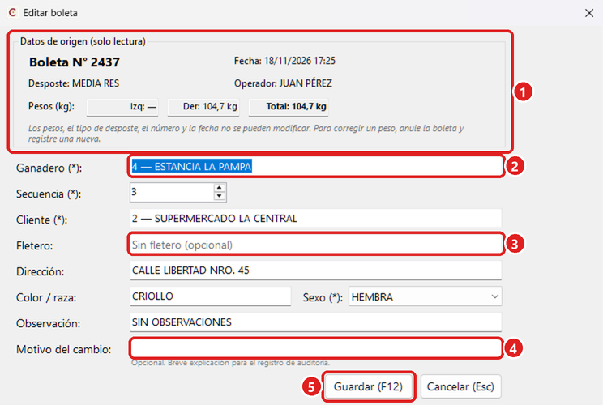
Figura 16. Ventana Editar boleta con los datos de origen en gris arriba y los campos que se pueden cambiar abajo 1Datos de origen: no se pueden cambiar2Ganadero3Fletero (opcional)4Motivo del cambio (opcional)5Guardar (F12)Cambie solo el dato que necesita corregir. Con la tecla Tab pasa de un campo al siguiente.
Si quiere, escriba en Motivo del cambio (círculo 4) por qué lo cambió. Es opcional.
Pulse Guardar (F12) (círculo 5) o la tecla F12.
Cuando el cambio se guarda, la ventana se cierra y la boleta sigue seleccionada en la lista. No aparece ningún mensaje de confirmación: si no hubo avisos de error, el cambio quedó guardado.
En esta ventana, la tecla Enter no guarda. Para guardar use el botón Guardar (F12) o la tecla F12. Para salir sin guardar pulse Cancelar (Esc) o Esc.
5.3Cómo cambiar cada dato
Los campos Ganadero, Secuencia, Cliente y Sexo llevan un asterisco (*) en la ventana: son los datos principales de la boleta. Dirección, Color / raza y Observación no llevan asterisco: son opcionales, igual que al pesar.
Ganadero, Cliente y Fletero
Estos tres campos funcionan como el buscador de ganaderos de la pantalla de pesaje.
Haga clic en el campo y borre el texto que tiene.
Escriba una parte del código o del nombre.
Haga clic en la persona correcta de la lista que aparece.
Solo se ofrecen los ganaderos, clientes y fleteros activos, más el que la boleta ya tiene. Para dejar la boleta sin fletero, borre el texto del campo Fletero (círculo 3 de la figura anterior): queda Sin fletero (opcional).
Después de escribir, elija siempre de la lista. Si deja el texto a medias, el sistema no lo da por elegido y no guarda: en Ganadero o Cliente aparece un círculo rojo con Seleccione el ganadero. o Seleccione el cliente., y en Fletero aparece uno con Elija el fletero de la lista o borre el texto. Elija de la lista o, en el fletero, borre el texto.
Secuencia
Es el número de ese animal entre los del mismo ganadero en el día. Puede escribir el número o usar las flechitas del campo. Debe estar entre 1 y 9999.
Los operadores cambian la secuencia solo cuando usted, como supervisor, se los indica. Usted decide si corresponde cambiarla. El sistema no avisa si usted repite una secuencia que ya existe para ese ganadero en el mismo día: revise la lista antes de cambiarla.
Dirección
Es la dirección que sale en la boleta, de hasta 150 letras. Si usted cambia el Cliente, la Dirección no se cambia sola: escriba la dirección que corresponda al cliente nuevo.
Color / raza, Sexo y Observación
Color / raza: texto libre de hasta 30 letras.
Sexo: elija MACHO o HEMBRA en la lista desplegable.
Observación: texto libre de hasta 250 letras.
El sistema guarda los textos en mayúsculas y quita los espacios sobrantes.
Motivo del cambio
Es opcional, de hasta 100 letras. Sirve para que quede escrito en la auditoría por qué se hizo el cambio, por ejemplo «Corrección de raza».
Esta es la ventana con la raza corregida y el motivo escrito, lista para guardar:
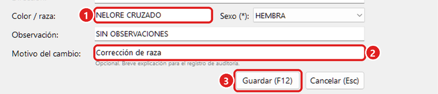
5.4Si algo está mal escrito: el círculo rojo
Si un dato no es válido, al pulsar Guardar (F12) aparece un círculo rojo con una equis junto al campo (círculo 1). Ponga el mouse encima y lea qué corregir. Los avisos más comunes son Seleccione el ganadero. y Seleccione el cliente.: aparecen cuando el campo quedó vacío o con el texto a medias, sin elegir de la lista. Mientras haya un círculo rojo, la boleta no se guarda.
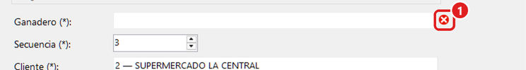
Si dejó un fletero sin elegir
El Fletero es opcional, pero si en ese campo queda un texto que no se eligió de la lista (por ejemplo «ra»), al pulsar Guardar (F12) aparece el círculo rojo (círculo 1) con el mensaje Elija el fletero de la lista o borre el texto. y la boleta no se guarda.
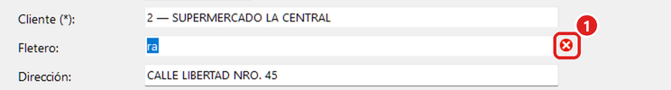
Haga clic en el campo Fletero.
Elija al fletero correcto de la lista que aparece, o borre todo el texto si la boleta no tuvo fletero.
Pulse otra vez Guardar (F12).
5.5Si no cambió nada
Si usted pulsa Guardar (F12) sin haber cambiado ningún dato, el sistema escribe No se modificó ningún dato. a la izquierda de los botones (círculo 1) y la ventana sigue abierta. No se guarda nada ni queda ningún registro. Pulse Cancelar (Esc) para salir.
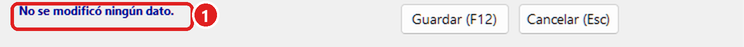
5.6Si otra persona cambió la boleta
Si la boleta se modificó o se anuló mientras usted la tenía abierta, el sistema muestra un mensaje en una ventana titulada Boleta. Los dos mensajes posibles son:
La boleta fue modificada por otro usuario o en otra ventana. Ciérrela y vuelva a abrirla.
La boleta N° … está anulada y no se puede modificar.
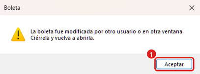
Si aparece alguno de estos mensajes:
Pulse Aceptar. La ventana de edición se cierra y la lista se actualiza.
Mire cómo quedó la boleta en la lista.
Si todavía necesita el cambio, vuelva a abrir la boleta con Editar (F4) y repítalo.
Sus cambios no se guardaron.
5.7Si ya había entregado la boleta impresa
La boleta impresa que ya entregó no cambia sola. Si corrigió un dato que sale en el papel, vuelva a imprimirla con Reimprimir boleta (F3): la nueva impresión saldrá con los datos corregidos y con la leyenda REIMPRESIÓN. Con el papel que se entregó antes de la corrección, siga el procedimiento de su empresa.
6.Anular una boleta
Anular una boleta es dejarla sin efecto. Se usa cuando la boleta no debió emitirse o cuando tiene un peso que no se puede corregir.
6.1Cuándo se anula
Anule una boleta si:
Un peso está mal, por ejemplo se capturó el lado equivocado o se grabó con el animal mal colocado.
El tipo de desposte está equivocado (se grabó como res completa y era media res, o al revés).
El pesaje quedó duplicado.
La boleta no debió emitirse.
Si lo que está mal es un dato descriptivo (ganadero, cliente, fletero, dirección, raza, sexo, observación o secuencia), no anule: edite la boleta (capítulo «Editar una boleta»).
6.2Qué pasa cuando se anula una boleta
La anulación no se puede deshacer. Una boleta anulada no vuelve a ser válida y no se puede editar. Compruebe el número de boleta antes de confirmar.
La boleta conserva su número. Ese número no se vuelve a usar. Por eso, al mirar las boletas válidas, puede faltar un número en la secuencia: es normal, corresponde a una boleta anulada.
En las listas se ve en gris con el estado ANULADA.
No cuenta en los reportes de pesaje (ni en los kilos ni en la cantidad de reses). Aparece solo en el reporte Boletas anuladas.
Si se vuelve a imprimir, sale con la leyenda ANULADA: seguida del motivo. En el papel el motivo se muestra recortado a unas 30 letras, así que escriba primero lo más importante.
Queda registrado quién la anuló y cuándo, en la auditoría.
El sistema permite anular una boleta de cualquier fecha, sin plazo. Cada anulación queda anotada en la auditoría con su usuario, la fecha y el motivo.
6.3Cómo anular una boleta
Abra Buscar / editar boleta y busque la boleta. Lo más seguro es escribir su N° boleta.
Haga clic en su fila para seleccionarla.
Pulse Anular (F8) o la tecla F8.
Se abre la ventana Anular boleta. Lea el resumen (círculo 1) y confirme que es la boleta correcta.
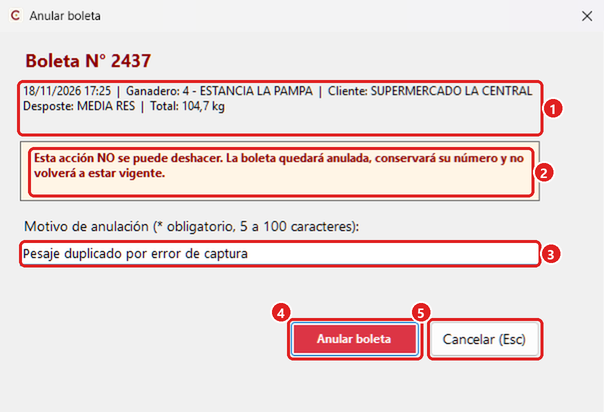
Figura 22. Ventana Anular boleta con el resumen de la boleta, el aviso de que no se puede deshacer y el campo del motivo 1Verifique que es la boleta correcta2Aviso: no se puede deshacer3Motivo de anulación (5 a 100 letras)4Anular boleta5Cancelar (Esc)Lea el aviso rojo (círculo 2): Esta acción NO se puede deshacer. La boleta quedará anulada, conservará su número y no volverá a estar vigente.
En Motivo de anulación (círculo 3) escriba el motivo. Debe tener entre 5 y 100 letras. Por ejemplo: «Pesaje duplicado por error de captura».
Pulse Anular boleta (círculo 4). El sistema primero revisa el motivo; si está bien, sigue el paso siguiente.
El sistema pregunta Se anulará la boleta N° … ¿Desea continuar? Pulse Sí (círculo 1 de esta figura) para anular o No (círculo 2) para arrepentirse. El botón No viene marcado: si pulsa Enter, la boleta no se anula.
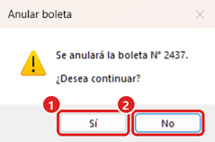
Figura 23. Pregunta de confirmación antes de anular la boleta, con los botones Sí y No 1Sí: anula la boleta2No: no hace nadaLa ventana se cierra y la boleta aparece en gris en la lista, con el estado ANULADA.
Escriba un motivo claro, que otra persona entienda sin preguntarle. Por ejemplo, «Cliente equivocado en la boleta» es mejor que «Error». El motivo se guarda en mayúsculas.
Si aparece un círculo rojo junto al campo del motivo, coloque el mouse encima y lea el texto. Lo más común es Ingrese el motivo de la anulación (mínimo 5 caracteres). El campo no deja escribir más de 100 letras. Corrija el motivo y pulse otra vez Anular boleta. El sistema revisa el motivo antes de hacer la pregunta de confirmación: si el motivo es corto, aparece el círculo rojo (círculo 1 de la figura) y no aparece la pregunta ¿Desea continuar?
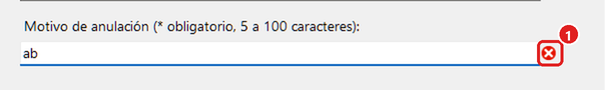
Si todavía no quiere anular, pulse Cancelar (Esc): no se hace ningún cambio.
6.4Si la boleta estaba mal: anular y pesar de nuevo
Cuando el error está en los pesos o en el tipo de desposte, haga lo siguiente:
Anule la boleta equivocada, como se explicó arriba.
Registre un pesaje nuevo del animal (menú Pesaje, Registrar pesaje). Se creará una boleta nueva con otro número.
Imprima la boleta nueva y entréguela al cliente.
La boleta anulada ya no es válida, pero el papel que se entregó antes no dice que está anulado. Con ese papel, siga el procedimiento de su empresa.
7.Reportes
Un reporte es un informe con la lista de boletas de un período y sus totales. Se puede ver en pantalla, imprimir, guardar como PDF (un documento que se ve igual en cualquier computadora y se imprime fácil) o guardar como Excel (un archivo que se abre en una hoja de cálculo para trabajar con los números).
7.1Abrir la ventana de reportes
En el menú Reportes hay tres opciones:
Reportes de pesaje (círculo 1): abre la ventana Reportes en el tipo Pesajes del día.
Pesajes por raza (círculo 2): abre la misma ventana ya en el tipo Pesajes por raza.
Boletas anuladas (círculo 3): abre la misma ventana ya en el tipo Boletas anuladas.
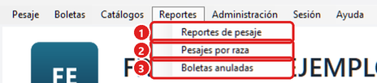
Las tres opciones abren la misma ventana. Dentro de ella usted puede cambiar el tipo en cualquier momento con la lista Tipo de reporte.
La ventana tiene cuatro partes: los filtros arriba (círculo 1), la lista de boletas (círculo 2), los totales (círculo 3) y los botones de abajo (círculo 4).
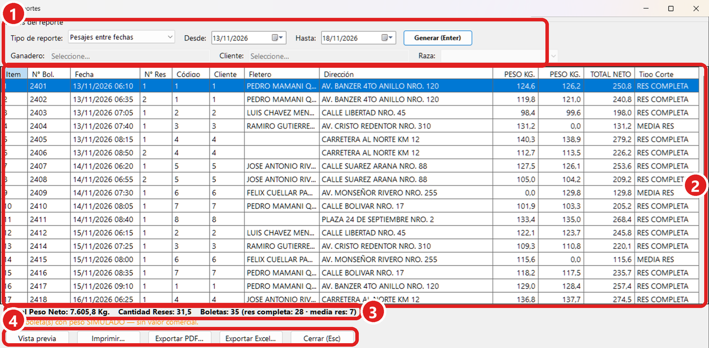
7.2Los seis tipos de reporte
| Tipo de reporte | Qué muestra |
|---|---|
| Pesajes del día | Las boletas válidas de un día. |
| Pesajes entre fechas | Las boletas válidas entre dos fechas. |
| Pesajes por ganadero | Las boletas válidas de un ganadero entre dos fechas. |
| Pesajes por cliente | Las boletas válidas de un cliente entre dos fechas. |
| Pesajes por raza | Las boletas válidas de una raza (el dato Color/Raza de la boleta) entre dos fechas. |
| Boletas anuladas | Solo las boletas anuladas, con la fecha, quién las anuló y el motivo. |
Los cinco primeros reportes no incluyen las boletas anuladas. Las anuladas están separadas en su propio reporte.
7.3Cómo generar un reporte
Abra la ventana Reportes desde el menú Reportes.
En Tipo de reporte elija el tipo (círculo 1).
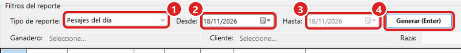
Figura 27. Filtros del reporte Pesajes del día: tipo, fecha Desde, fecha Hasta en gris y botón Generar 1Tipo de reporte2Desde: el día3Hasta: en gris, sigue al Desde4Pulse Generar (Enter)Elija la fecha Desde (círculo 2). En Pesajes del día es el día del reporte; la fecha Hasta (círculo 3) está en gris y sigue a Desde.
En los demás tipos, elija también la fecha Hasta.
Si el reporte es por ganadero, por cliente o por raza, elija cuál (ver más abajo).
Pulse Generar (Enter) (círculo 4) o pulse Enter.
Mire la lista y los totales.
La ventana no genera el reporte sola. Siempre hay que pulsar Generar (Enter). Mientras no lo haga, los botones Vista previa, Imprimir…, Exportar PDF… y Exportar Excel… están apagados (grises).
Pesajes entre fechas
Elija el tipo Pesajes entre fechas y las dos fechas, Desde y Hasta. Pulse Generar (Enter).
Pesajes por ganadero
En Tipo de reporte elija Pesajes por ganadero.
En Ganadero (círculo 1) escriba una parte del código o del nombre y elija de la lista.
Elija las fechas Desde y Hasta.
Pulse Generar (Enter) (círculo 2).
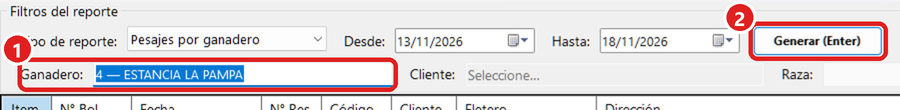
Si usted no eligió un ganadero, aparece un círculo rojo con el aviso Seleccione el ganadero.
Pesajes por cliente
En Tipo de reporte elija Pesajes por cliente.
En Cliente escriba una parte del código o del nombre y elija de la lista.
Elija las fechas Desde y Hasta.
Pulse Generar (Enter).
Si no eligió al cliente, aparece el aviso Seleccione el cliente.
Pesajes por raza
En Tipo de reporte elija Pesajes por raza.
Haga clic en la lista Raza y elija una (círculo 1). La lista muestra las razas que ya aparecen en las boletas grabadas.
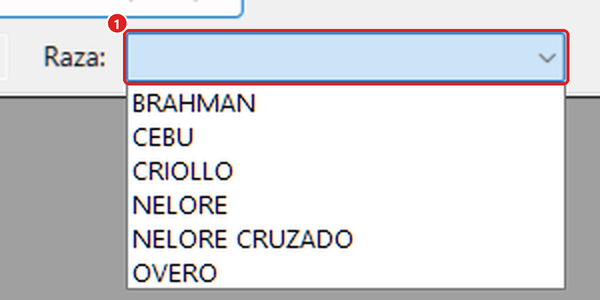
Figura 29. Lista de razas desplegada en el reporte Pesajes por raza 1Raza: elija una de la listaElija las fechas Desde y Hasta.
Pulse Generar (Enter).
Si no eligió una raza, aparece el aviso Seleccione la raza.
La raza se compara exactamente como está escrita. «NELORE» y «NELORE CRUZADO» son dos razas distintas y aparecen por separado en la lista. Para que los reportes por raza sean útiles, pida a quienes pesan que escriban siempre cada raza de la misma forma. Si se escribió mal en una boleta, puede corregirla con Editar boleta.
Boletas anuladas
En Tipo de reporte elija Boletas anuladas.
Elija las fechas Desde y Hasta.
Pulse Generar (Enter).
Este reporte tiene otras columnas: Anulada el, Anulada por y Motivo (círculo 1). Abajo dice cuántas boletas hay y cuántos kilos sumaban: Boletas anuladas: 2 Peso neto anulado: 494,5 Kg.
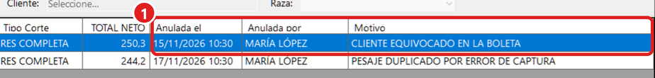
En este reporte las fechas Desde y Hasta se refieren al día en que se emitió la boleta, no al día en que se anuló. Una boleta emitida el lunes y anulada el miércoles aparece al buscar el lunes. Si busca el miércoles, no la verá.
7.4Cómo leer la lista del reporte
La lista (llamada «grilla» o «tabla») tiene estas columnas:
| Columna | Qué muestra |
|---|---|
| Item | El número de orden dentro del reporte (1, 2, 3…). |
| N° Bol. | El número de la boleta. Si lleva un asterisco, el peso es simulado (ver más abajo). |
| Fecha | El día y la hora. |
| N° Res | La secuencia: el número de ese animal entre los del mismo ganadero en el día. |
| Código | El código del ganadero. |
| Cliente | El código del cliente (no su nombre). |
| Fletero | El nombre del fletero, si lo hubo. |
| Dirección | La dirección de la boleta. |
| PESO KG. IZQ. y PESO KG. DER. | El peso del lado izquierdo y el del lado derecho. En una media res, el lado que no se pesó muestra 0,0. |
| TOTAL NETO | El peso total de la boleta. |
| Tipo Corte | RES COMPLETA o MEDIA RES. Si su empresa pesa un solo tipo y todas las boletas del reporte son de ese tipo, esta columna no aparece. |
Los reportes se ordenan por fecha, de la más antigua a la más nueva. Los kilos se escriben con coma para los decimales y punto para los miles: 7.605,8 significa siete mil seiscientos cinco kilos y ocho décimas.
7.5Cómo leer los totales
Debajo de la lista, el sistema escribe los totales (círculo 1):
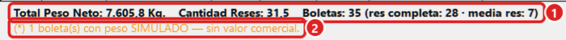
Total Peso Neto: 7.605,8 Kg. Cantidad Reses: 31,5 Boletas: 35 (res completa: 28 · media res: 7)
Total Peso Neto: la suma de los kilos de todas las boletas del reporte.
Cantidad Reses: cuántos animales se pesaron.
Boletas: cuántas boletas tiene el reporte, y cuántas son de res completa y cuántas de media res. Si su empresa pesa un solo tipo y todas las boletas son de ese tipo, solo dice Boletas: N.
Cómo se cuentan las reses
El sistema cuenta las reses de esta manera:
Una res completa cuenta como 1.
Una media res cuenta como 0,5, porque es la mitad de un animal.
Por eso, en el ejemplo: 28 reses completas (28 × 1 = 28) más 7 medias reses (7 × 0,5 = 3,5) dan 31,5 reses. Así, dos medias reses suman un animal. Si ve un número con coma, como 31,5, significa que hay medias reses sin completar la pareja.
Boletas con peso simulado
Algunas boletas pueden haberse pesado con el simulador de la balanza (que solo se usa para pruebas). En el reporte aparecen con un asterisco pegado al número de boleta (círculo 1 de la figura de abajo, «2435*»), y debajo de los totales sale un aviso en naranja (círculo 2 de la figura de arriba): (*) 1 boleta(s) con peso SIMULADO — sin valor comercial.
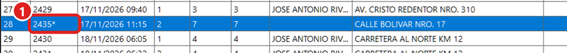
Esas boletas sí suman en los totales. Si en un reporte real ve este aviso, avise a su administrador del sistema.
7.6Límites del reporte
Para que la computadora no se ponga lenta, el sistema pone tres límites:
| Límite | Qué significa | Qué hacer |
|---|---|---|
| 20.000 boletas por reporte | Un reporte no puede tener más de veinte mil boletas. El sistema avisa con un círculo rojo: El reporte supera el máximo de 20.000 boletas. Reduzca el rango de fechas. | Elija un rango de fechas más corto. |
| 1.000 filas en la pantalla | La lista de la ventana muestra solo las primeras 1.000 boletas. Los totales sí cuentan todas. Aparece el aviso La vista muestra las primeras 1.000 boletas; el PDF y el Excel incluyen las N., donde N es el total de boletas. | Para ver todas las filas, use Exportar PDF… o Exportar Excel…. |
| 2.000 boletas para imprimir | Vista previa e Imprimir… funcionan hasta 2.000 boletas. Si hay más, esos dos botones se apagan y aparece el aviso Para imprimir más de 2.000 boletas, exporte a PDF e imprímalo desde el lector de PDF. | Guarde el reporte como PDF y mande a imprimir el archivo. |
7.7Ver, imprimir y guardar el reporte
Después de pulsar Generar (Enter), y si el reporte tiene al menos una boleta, se encienden cuatro botones en la parte de abajo de la ventana.
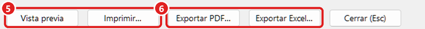
Vista previa
Pulse Vista previa (círculo 5 de la figura anterior).
Espere unos segundos. Se abre una ventana que muestra las hojas del reporte como saldrían impresas.
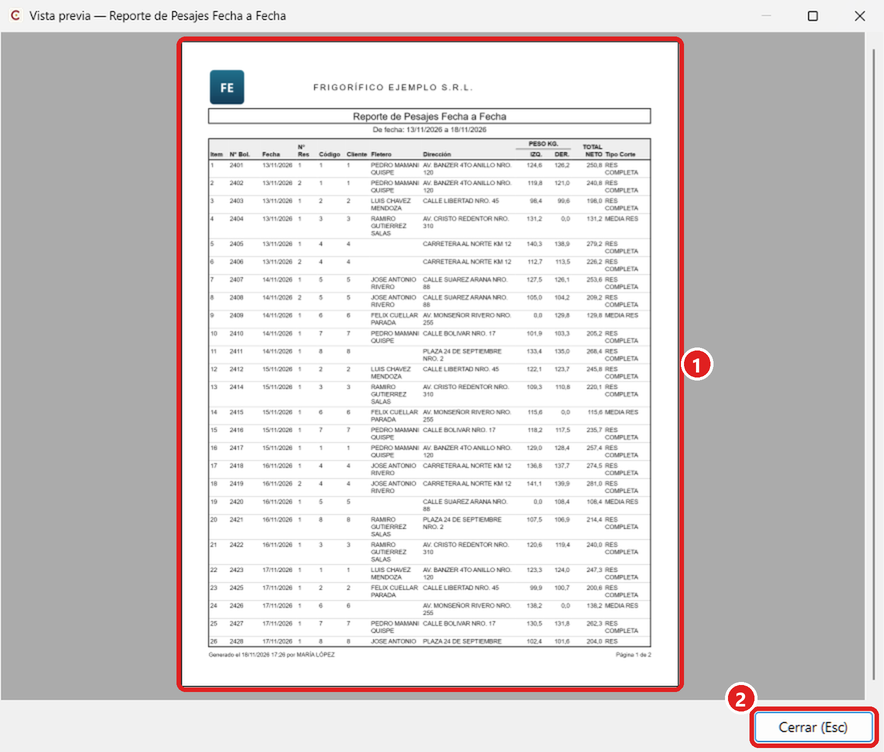
Figura 34. Vista previa del reporte: la primera hoja con el logo, el título, la tabla y el pie de página 1Así saldrá el reporte en papel2Cerrar (Esc)Para pasar a la página siguiente, pulse la tecla AvPág. Para volver a la página anterior, pulse RePág.
Para cerrarla, pulse Cerrar (Esc).
En la parte de abajo de cada hoja figura quién generó el reporte, cuándo, y el número de página («Página 1 de 2»). Los totales aparecen en la última hoja (círculo 1 de la figura siguiente).
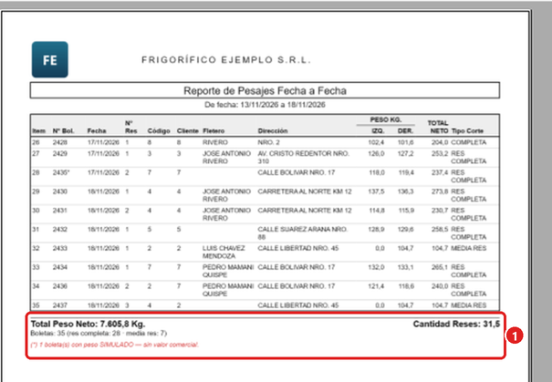
En la vista previa, la rueda del mouse y las flechas del teclado no cambian de página: use solo AvPág y RePág. La vista previa es solo para mirar: no imprime.
Imprimir
Pulse Imprimir….
Se abre la ventana de impresión de Windows. Elija la impresora.
Pulse el botón de imprimir de esa ventana.
Si usted cierra o cancela la ventana de impresión de Windows, no se imprime nada.
Guardar como PDF
Pulse Exportar PDF… (círculo 6 de la figura de los botones).
Se abre la ventana de Windows para guardar el archivo. Ya trae un nombre sugerido, por ejemplo «Pesajes_2026-10-03_a_2026-10-08.pdf», y empieza en la carpeta Documentos.
Si quiere, cambie la carpeta o el nombre.
Pulse el botón Guardar de esa ventana.
Aparece la pregunta Se guardó el archivo: (con la ruta) ¿Desea abrirlo ahora? Pulse Sí (círculo 1) para verlo en seguida o No (círculo 2) para dejarlo.
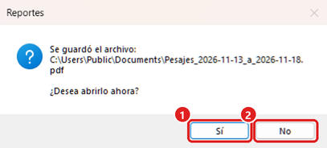
Figura 36. Pregunta que aparece al guardar el archivo: ¿Desea abrirlo ahora?, con los botones Sí y No 1Sí: abre el archivo2No: solo lo deja guardado
Anote en qué carpeta guardó el archivo. Si más tarde quiere enviarlo por correo o por WhatsApp, búsquelo en esa carpeta. Si guardó el archivo con el mismo nombre que otro que ya existía, Windows le preguntará si desea reemplazarlo.
Guardar como Excel
Pulse Exportar Excel….
Siga los mismos pasos que para el PDF. El archivo termina en «.xlsx».
El archivo de Excel trae los números y las fechas como valores reales, para que usted pueda sumar, ordenar y filtrar en la hoja de cálculo.
El PDF y el Excel siempre muestran lo mismo que usted generó. Si cambia las fechas o el tipo de reporte, genere el reporte de nuevo antes de exportar.
7.8Si cambia un filtro después de generar
Si usted cambia cualquier filtro después de generar (la fecha, el tipo, el ganadero, el cliente o la raza), el sistema borra la lista para que no mire datos viejos y escribe Los filtros cambiaron: presione Generar para actualizar el reporte. (círculo 1). Los botones de vista previa, impresión y exportación se apagan (círculo 2). Pulse Generar (Enter) otra vez.
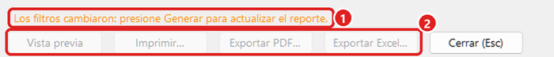
No hay boletas para los filtros seleccionados.: no hay boletas en ese período o con esa condición. Cambie las fechas o el ganadero, cliente o raza. Los botones de exportar no se encienden si no hay boletas.
La fecha final no puede ser anterior a la inicial.: corrija Hasta.
No se pudo guardar el archivo «…». Verifique que no esté abierto en otro programa y que tenga permiso para escribir en esa carpeta.: cierre el archivo si lo tiene abierto, o guárdelo en otra carpeta, por ejemplo Documentos.
No hay un programa asociado para abrir el archivo.: el archivo sí se guardó, pero la computadora no tiene un programa para abrir ese tipo de archivo. Pida ayuda a su administrador del sistema.
No se pudo imprimir el reporte: (con un texto del problema): la impresora no está disponible. Revise que esté encendida y conectada. Si la computadora no tiene ninguna impresora instalada, la vista previa puede fallar; guarde el reporte como PDF.
No hay un logo configurado: el reporte sale sin logo (Administración › Parámetros del sistema).: es solo un aviso. El reporte sale correcto, pero sin el logo de la empresa; pida al administrador que lo configure.
8.Catálogos: ganaderos, clientes y fleteros
Un catálogo es una lista de datos que el sistema usa una y otra vez, para no tener que escribirlos en cada pesaje. Hay tres:
Ganaderos: quienes entregan los animales para faenar.
Clientes: quienes reciben la carne.
Fleteros: quienes transportan la carne.
Usted puede agregarlos, corregirlos y retirarlos de la lista.
8.1Abrir un catálogo
En el menú Catálogos elija Ganaderos (círculo 1), Clientes (círculo 2) o Fleteros (círculo 3).
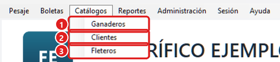
Figura 38. Menú Catálogos desplegado con Ganaderos, Clientes y Fleteros 1Ganaderos2Clientes3Fleteros
Las tres pantallas funcionan de la misma manera. Se explican con Ganaderos; las diferencias están al final del capítulo.
8.2La pantalla de Ganaderos
Muestra una lista con el Código, el Nombre y si el ganadero está Activo (Sí o No). A la derecha están los botones Nuevo, Editar y Desactivar, y abajo el botón Cerrar.
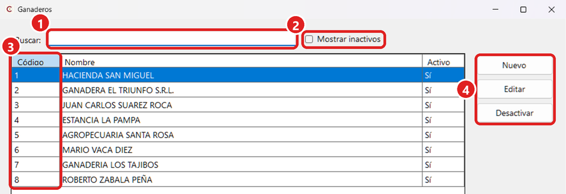
Buscar: (círculo 1) sirve para encontrar a alguien en una lista larga. Escriba parte del código o del nombre, y cuando aparezca la lista de coincidencias, haga clic en la persona: la lista de abajo se mueve y la deja seleccionada. El buscador solo ofrece a los ganaderos activos.
Mostrar inactivos (círculo 2) agrega a la lista los ganaderos que se desactivaron.
El Código (círculo 3) lo pone el sistema.
Los botones (círculo 4) crean, corrigen y desactivan. Editar y Desactivar se encienden cuando usted selecciona una fila.
8.3Agregar un ganadero nuevo
Abra Catálogos y elija Ganaderos.
Pulse Nuevo. Se abre la ventana Nuevo Ganadero.
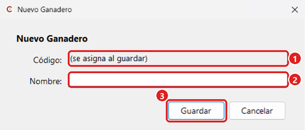
Figura 40. Ventana Nuevo Ganadero: el código dice «(se asigna al guardar)» y solo se escribe el nombre 1Código: no se escribe2Escriba el nombre3Pulse GuardarFíjese en que el campo Código dice (se asigna al guardar) (círculo 1). No lo toque: el sistema pone el número solo.
Escriba el Nombre (círculo 2).
Pulse Guardar (círculo 3) o pulse Enter.
La ventana se cierra y el ganadero nuevo aparece en la lista, con su código ya asignado.
Si el nombre es demasiado corto, aparece un círculo rojo junto al campo (círculo 1 de la figura). Ponga el mouse encima y lea el aviso Ingrese el nombre (3 a 100 caracteres).
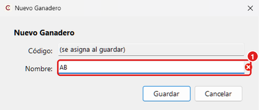
Antes de crear a alguien, búsquelo. El sistema permite dos ganaderos con el mismo nombre (por ejemplo, si lo escribe dos veces); cada uno recibirá un código distinto. Esto confunde después las boletas y los reportes. Use Buscar: para comprobar que no existe.
8.4Corregir un ganadero
Haga clic en la fila del ganadero.
Pulse Editar. También sirve el doble clic sobre la fila o la tecla Enter.
Se abre la ventana Editar Ganadero. Corrija el Nombre.
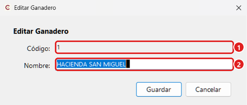
Figura 42. Ventana Editar Ganadero: el código se ve pero no se puede cambiar; solo se corrige el nombre 1Código: se ve, no se cambia2Corrija el nombrePulse Guardar.
El Código se ve (círculo 1) pero no se puede cambiar.
La boleta no guarda una copia del nombre: guarda a quién pertenece. Por eso, si cambia el nombre de un ganadero, el cambio se verá también en sus boletas anteriores cuando se muestren o se reimpriman, y en los reportes. Use Editar solo para corregir errores de escritura. Nunca reemplace a un ganadero por otra persona distinta cambiándole el nombre: cree uno nuevo.
8.5Desactivar y reactivar (nada se borra)
Los datos de los catálogos no se pueden borrar. Si un ganadero, cliente o fletero ya no se usa, se desactiva. Un registro desactivado deja de ofrecerse al pesar, pero sus boletas anteriores lo conservan y siguen mostrándolo.
Para desactivar:
Haga clic en la fila.
Pulse Desactivar.
El sistema pregunta, por ejemplo: ¿Está seguro de que desea desactivar al ganadero '1 — HACIENDA SAN MIGUEL'? Pulse Sí (círculo 1).
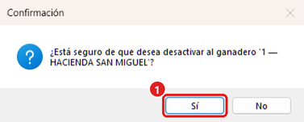
Figura 43. Pregunta de confirmación para desactivar un ganadero, con los botones Sí y No 1Sí: desactiva al ganadero
Para reactivarlo:
Marque la casilla Mostrar inactivos (círculo 1). Los desactivados aparecen con No en la columna Activo (círculo 2).
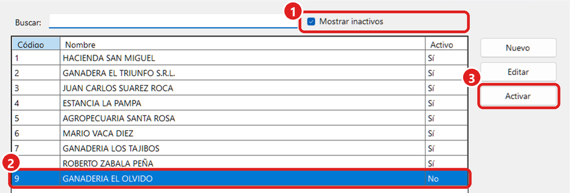
Figura 44. Lista de ganaderos con Mostrar inactivos marcado: el ganadero 9 está inactivo y el botón dice Activar 1Mostrar inactivos marcado2Ganadero inactivo (Activo: No)3El botón ahora dice ActivarHaga clic en la fila del que quiere recuperar. El botón cambia y dice Activar (círculo 3).
Pulse Activar y confirme con Sí.
Un ganadero, cliente o fletero desactivado todavía aparece al buscar boletas y al emitir reportes, para que usted pueda consultar su historial.
8.6Las reglas de cada catálogo
| Catálogo | Datos que se escriben | Reglas |
|---|---|---|
| Ganaderos | Nombre | De 3 a 100 caracteres, con al menos una letra. El Código lo asigna el sistema (1, 2, 3…). Los ganaderos traídos del sistema anterior pueden tener un código con letras, como «AH»; se respeta tal cual. |
| Clientes | Nombre y Dirección | El nombre, de 3 a 100 caracteres, con al menos una letra. La dirección es opcional, de hasta 150 caracteres. El Código lo asigna el sistema: el número que sigue al código más alto ya usado. |
| Fleteros | Nombre y Celular | El nombre, de 3 a 100 caracteres, con al menos una letra. El Celular es obligatorio: de 6 a 20 caracteres, solo números, espacios y los signos «+», «-» y paréntesis, con al menos 6 números. No hay límite de fleteros. El Código lo asigna el sistema. |
Todo se guarda en mayúsculas y sin espacios repetidos. Los campos Nombre y Dirección ya escriben en mayúsculas.
Si falta algo, aparece un círculo rojo junto al campo. Los avisos son:
Ingrese el nombre (3 a 100 caracteres).
Ingrese un celular válido (6 a 20 caracteres: números, espacios, +, -, paréntesis).
8.7Diferencias entre los tres catálogos
Clientes
La pantalla tiene, además, la columna Dirección. El buscador Buscar: encuentra por código o por nombre, no por dirección.
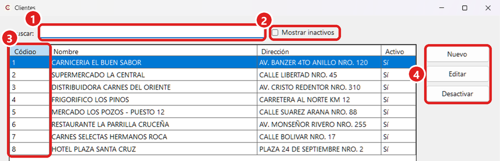
Al crear un cliente se escribe el Nombre y, si quiere, la Dirección. La ventana se llama Nuevo Cliente (o Editar Cliente).
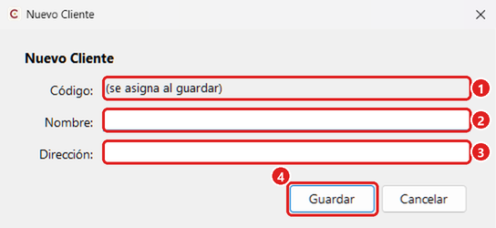
Fleteros
La pantalla Fleteros muestra el Código, el Nombre, el Celular y si está Activo. No tiene buscador: use la rueda del mouse para recorrer la lista. El fletero se elige en cada pesaje, y la boleta imprime solo el fletero elegido.
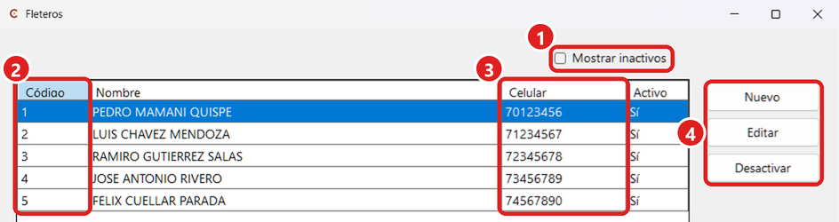
Al crear un fletero se escribe el Nombre y el Celular. La ventana se llama Nuevo Fletero (o Editar Fletero).
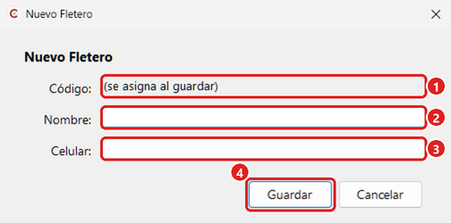
Si el celular tiene menos de 6 números, aparece el círculo rojo (círculo 1 de la figura siguiente) con el aviso Ingrese un celular válido (6 a 20 caracteres: números, espacios, +, -, paréntesis).
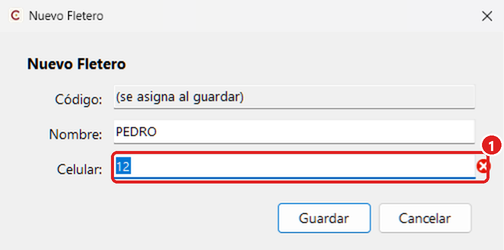
8.8Por qué los códigos no se escriben ni se cambian
El código es el «número de identidad» de cada ganadero, cliente o fletero dentro del sistema. Aparece en las boletas y en los reportes. Si dos personas pudieran tener el mismo código, o si un código se pudiera cambiar después, las boletas y los reportes se podrían confundir.
Por eso:
Lo pone el sistema al guardar: el número que sigue al código más alto ya usado (aunque ese registro esté desactivado). Si falta un número en la lista, no se vuelve a usar.
No se puede escribir ni cambiar, ni al crear ni al editar.
Nunca se repite ni se reutiliza, aunque la persona se desactive.
9.Visor de auditoría
9.1Qué es
La auditoría es un diario que el sistema escribe solo. Cada vez que alguien hace algo importante (entra al sistema, graba una boleta, la edita, la anula, la imprime, cambia un catálogo…), queda anotado quién lo hizo, qué hizo y cuándo.
El Visor de auditoría sirve para consultar ese diario. Por ejemplo, para saber quién anuló la boleta 2424 o quién cambió la raza de una boleta, y qué decía antes.
El visor es solo de lectura. No permite cambiar, borrar ni exportar nada. Nadie, ni siquiera el Administrador, puede borrar el diario desde esta pantalla.
9.2Abrir el visor
En el menú Administración elija Visor de auditoría.
Al abrir, muestra los registros de hoy.
9.3Buscar registros
Los filtros están arriba de la ventana:
| Filtro | Para qué sirve |
|---|---|
| Desde y Hasta (círculo 1) | El período. Si desmarca la casilla de una fecha, no hay límite de ese lado. |
| Entidad (círculo 2) | El tipo de dato: Pesaje (las boletas), Ganadero, Cliente, Fletero, Usuario, ParametrosSistema, ConfiguracionBalanza, ConfiguracionImpresion o Sistema. |
| Acción (círculo 3) | Qué se hizo (ver la tabla de más abajo). |
| Usuario | Quién lo hizo. |
| N° boleta (círculo 4) | Muestra solo los registros de una boleta. |
Pulse Buscar (Enter) o Enter. Limpiar vuelve a poner el día de hoy y borra el resto de los filtros.
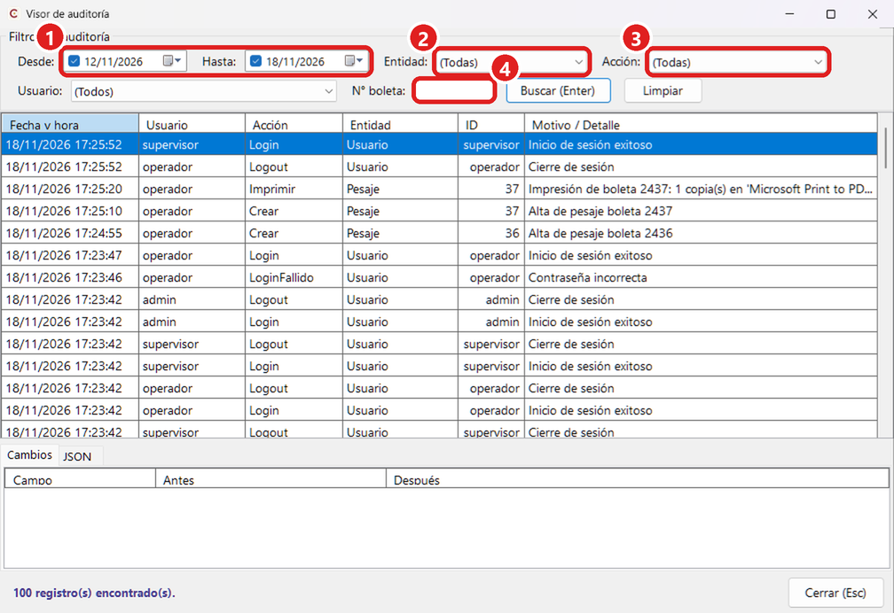
A diferencia de Buscar / editar boletas, aquí las fechas siguen valiendo aunque escriba un N° boleta. El visor busca los registros anotados entre Desde y Hasta. Si la boleta se grabó hace varios días y las fechas son solo las de hoy, no encontrará registros. Amplíe las fechas.
Si escribe un número de boleta que no existe, aparece un círculo rojo con el aviso No existe la boleta N° ….
9.4Qué significan las acciones
Esto es lo que verá en la lista Acción:
| Acción | Qué significa |
|---|---|
| Crear | Se creó algo: una boleta, un ganadero, un cliente, un fletero o un usuario. |
| Modificar | Se cambió algo: se editó una boleta o un catálogo, o se activó o desactivó un registro. |
| Anular | Se anuló una boleta. |
| Imprimir | Se imprimió una boleta por primera vez. |
| Reimprimir | Se imprimió otra vez una boleta. |
| Login | Una persona entró al sistema. |
| Logout | Una persona cerró sesión. |
| LoginFallido | Alguien escribió mal el usuario o la contraseña. |
| CambioPassword | Una persona cambió su propia contraseña. |
| RestablecerPassword | El administrador restableció la contraseña de alguien. |
| CambioParametros, CambioConfigBalanza, CambioConfigImpresion | El administrador cambió datos de la empresa, la balanza o la impresión. |
| Backup, Restauracion, Importacion, ActualizacionSistema | Acciones del administrador: copias de seguridad, restauraciones, importación de datos y actualizaciones del sistema. |
9.5Cómo leer la lista
Cada fila es un registro. Las columnas son:
| Columna | Qué muestra |
|---|---|
| Fecha y hora | Cuándo ocurrió, con la hora de su computadora. |
| Usuario | Quién lo hizo. |
| Acción | Qué hizo (ver la tabla anterior). |
| Entidad | Sobre qué tipo de dato. |
| ID | Un código interno del sistema. No es el número de boleta. |
| Motivo / Detalle | Una frase que explica lo ocurrido, por ejemplo Edición de boleta 2421: Color/raza — CORRECCIÓN DE RAZA o Alta de pesaje boleta 2437. |
Para saber de qué boleta habla un registro, lea la columna Motivo / Detalle, donde aparece el número de boleta. No use la columna ID.
Los registros más nuevos aparecen primero. Debajo de la lista hay un resumen:
99 registro(s) encontrado(s). (el número cambia).
No hay registros para esos filtros.
Se muestran los primeros 500 registros; refine la búsqueda. (en naranja). Hay más de 500 registros: ponga filtros más precisos, por ejemplo un período más corto.
9.6Ver qué cambió: la pestaña Cambios
Haga clic en un registro de la lista (círculo 1).
Abajo, mire la pestaña Cambios. Muestra tres columnas: Campo, Antes y Después.
Busque las filas amarillas (círculo 2): son los datos que cambiaron. Las filas sin color no cambiaron.
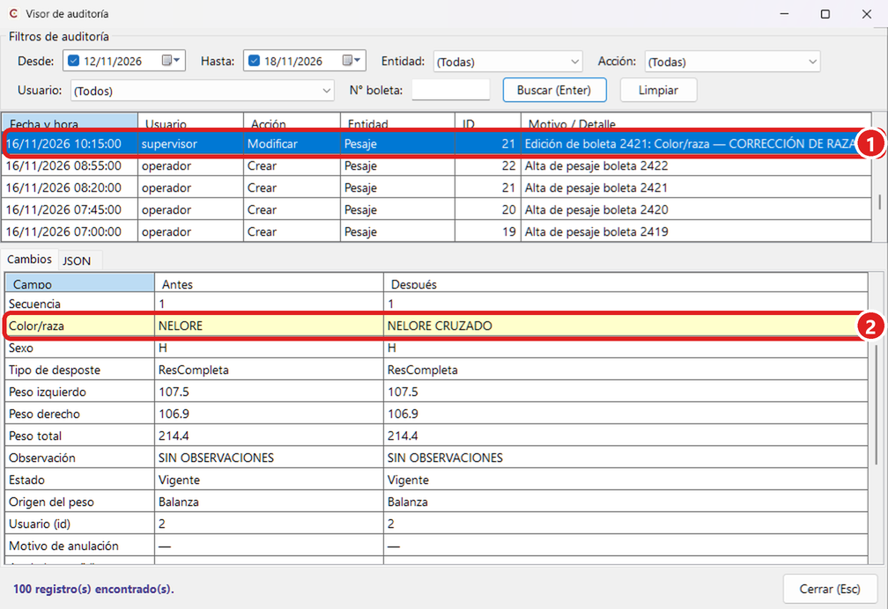
En este ejemplo, el supervisor corrigió el dato Color/raza: antes decía NELORE y después NELORE CRUZADO. Todo lo demás de la boleta quedó igual.
Algunos registros no tienen «antes» y «después»: por ejemplo, un ingreso al sistema. En ese caso la pestaña Cambios queda vacía y toda la información está en la columna Motivo / Detalle.
En esta pestaña algunos datos se ven en forma técnica: los kilos con punto decimal (107.5), el sexo como M o H y el desposte como ResCompleta o MediaRes. Es normal.
9.7La pestaña JSON
La pestaña JSON muestra el mismo registro en un formato técnico, antes y después del cambio. Es para el personal técnico que revisa el sistema. Usted no la necesita para su trabajo diario.
10.Si algo sale mal
Esta lista reúne los problemas más comunes. Si el suyo no está aquí, consulte a su administrador del sistema.
10.1Al entrar al sistema
| Qué ocurre | Qué hacer |
|---|---|
| Aparece Usuario o contraseña incorrectos. | Revise que escribió bien el usuario y la contraseña, y que no tiene Bloq Mayús activado. |
| Aparece Usuario bloqueado temporalmente por intentos fallidos. Intente de nuevo en N minuto(s). | Espere los minutos que indica el mensaje, o pida a su administrador del sistema que le restablezca la contraseña. |
| Olvidó la contraseña | Pida a su administrador del sistema que se la restablezca. Al entrar de nuevo, el sistema le pedirá elegir una nueva. |
| No ve una opción de menú que otra persona sí ve | Su rol no tiene permiso para esa opción. Por ejemplo, el menú Utilitarios es solo del Administrador. |
10.2Al pesar
Los operadores llaman al supervisor cuando el sistema no deja capturar un peso. Esto es lo que usted puede hacer.
| Qué ocurre | Qué hacer |
|---|---|
| El operador le avisa que la frase guía dice Peso fuera de rango (10,0 a 600,0 kg). | Con la balanza vacía (hasta 2,0 kg) este aviso no aparece: la frase guía le dice qué lado capturar. Si aparece, hay un peso estable sobre la balanza fuera del rango permitido. Cada lado de la res debe pesar entre 10,0 y 600,0 kg. Revise con el operador que la res esté bien colgada, que no haya nada más apoyado en la balanza ni tocando los ganchos, y que el peso del indicador sea el que corresponde a un lado de res válido. Con el peso estable y dentro de ese rango, el sistema vuelve a permitir capturarlo. |
| El peso sigue fuera de rango aunque todo está bien | El sistema no acepta un peso fuera de ese rango y usted no puede forzarlo. Avise a su administrador del sistema para que revise la balanza. |
| El sistema no deja grabar el pesaje y la frase guía pide capturar otro lado (por ejemplo Capture el lado derecho (F6).) o dice Media res: capture solo un lado. Use F8 para borrar el pesaje. | Una res completa necesita sus dos lados y una media res solo uno. Revise que el Desposte elegido sea el correcto. Si se equivocó de desposte después de capturar, pulse F8 (Borrar pesaje) y capture otra vez. |
10.3Boletas
| Qué ocurre | Qué hacer |
|---|---|
| Los botones Editar (F4) y Anular (F8) están grises | No hay ninguna boleta seleccionada, o la boleta elegida está ANULADA. Haga clic en una boleta vigente. |
| La búsqueda no muestra nada | Compruebe las fechas Desde y Hasta: al abrir son solo las de hoy. Escriba el N° boleta si lo conoce. |
| Elegí un ganadero y siguen saliendo todas las boletas | El ganadero debe elegirse de la lista: el campo debe mostrar el código, una raya y el nombre. |
| Un peso quedó mal | Los pesos no se pueden editar. Anule la boleta y registre un pesaje nuevo. |
| Anulé una boleta por error | La anulación no se puede deshacer. Registre un pesaje nuevo del animal (se creará una boleta con otro número). La anulación y su motivo quedan en la auditoría. |
| Un dato descriptivo (ganadero, cliente, raza…) está mal | No anule: use Editar (F4) para corregirlo. |
| En la secuencia de boletas falta un número | Es normal: se anuló una boleta y su número no se reutiliza. Búsquela con el estado Anulado. |
| Aparece La boleta fue modificada por otro usuario o en otra ventana. Ciérrela y vuelva a abrirla. | Pulse Aceptar, mire cómo quedó la boleta y, si todavía lo necesita, repita el cambio. |
| Guardé una edición y no apareció ningún mensaje | Así funciona: si no hubo errores, el cambio quedó guardado. Compruébelo en la lista. |
| Escribí el motivo de la anulación y dice que es muy corto | El motivo debe tener entre 5 y 100 letras. |
| Un operador me pide cambiar la secuencia de una boleta | Usted decide si corresponde. Edite la boleta y cambie Secuencia; el sistema no avisa si la repite, así que revise antes la lista. |
10.4Reportes
| Qué ocurre | Qué hacer |
|---|---|
| Los botones Vista previa, Imprimir…, Exportar PDF… y Exportar Excel… están grises | Pulse primero Generar (Enter). Si el reporte no tiene boletas, o si cambió un filtro después de generar, tampoco se encienden. |
| Vista previa e Imprimir… están grises pero el reporte sí tiene boletas | Tiene más de 2.000 boletas. Use Exportar PDF…. |
| Aparece Los filtros cambiaron: presione Generar para actualizar el reporte. | Pulse Generar (Enter) otra vez. |
| Aparece El reporte supera el máximo de 20.000 boletas. Reduzca el rango de fechas. | Elija un período más corto. |
| Los totales no coinciden con lo que contó a mano | Recuerde que las boletas anuladas no cuentan, que una media res cuenta 0,5, y que la lista de pantalla solo muestra las primeras 1.000 filas, aunque los totales incluyen todas. |
| El reporte por raza no encuentra una raza | La raza se compara exactamente como está escrita. Elija en la lista Raza la forma exacta. |
| El PDF o el Excel no se guarda | Cierre el archivo si lo tiene abierto en otro programa, o guárdelo en otra carpeta (por ejemplo Documentos). |
| Vista previa falla o no se puede imprimir | Revise la impresora. Si la computadora no tiene impresora instalada, guarde el reporte como PDF. |
| En la vista previa no puedo pasar a la página 2 con la rueda del mouse | Use la tecla AvPág para avanzar y RePág para retroceder. |
10.5Catálogos
| Qué ocurre | Qué hacer |
|---|---|
| No encuentro cómo escribir el código de un ganadero, cliente o fletero | No se escribe: el sistema lo asigna al guardar y no se puede cambiar. |
| Quiero borrar a un ganadero, cliente o fletero | No se puede borrar. Use Desactivar: deja de ofrecerse al pesar, pero conserva su historial. |
| Un fletero, cliente o ganadero no aparece al pesar | Probablemente está desactivado. Marque Mostrar inactivos y use Activar. |
| Creé un ganadero que ya existía | El sistema permite nombres repetidos. Desactive el que sobra (el más nuevo, si todavía no tiene boletas). Antes de crear, busque siempre. |
| Aparece Ingrese un celular válido (6 a 20 caracteres: números, espacios, +, -, paréntesis). | En Celular escriba al menos 6 números. No use letras ni puntos. |
| Cambié el nombre de un cliente y también cambió en boletas viejas | Es lo esperado: la boleta se refiere a la persona, no guarda una copia del nombre. Use Editar solo para corregir errores de escritura. |
10.6Visor de auditoría
| Qué ocurre | Qué hacer |
|---|---|
| No encuentro los registros de una boleta | Amplíe las fechas Desde y Hasta: aquí las fechas valen aunque escriba el N° boleta. |
| La columna ID no coincide con el número de boleta | Es normal: ID es un código interno. El número de boleta está en Motivo / Detalle. |
| Quiero borrar o corregir un registro | No se puede: el visor es solo de lectura y el diario no se modifica. |
10.7Mensajes que no están en este manual
Si aparece un mensaje de error inesperado o algo que no entiende:
No cierre ni apague la computadora de inmediato.
Anote qué estaba haciendo y el texto del mensaje, o tome una foto de la pantalla.
Avise a su administrador del sistema.
10.8El sistema dice «Modo consulta» o pide una clave de activación
El sistema necesita una licencia para funcionar completo. Si en la barra de estado, abajo, ve Prueba: N días, el sistema está en período de prueba y funciona normalmente. Si ve Modo consulta, la prueba terminó: puede ver el historial y reimprimir, pero no puede pesar (Registrar pesaje aparece en gris).
Si al abrir el sistema aparece la ventana Activar Capataz, o si ve Modo consulta, avise a su administrador del sistema. No pulse Probar 15 días ni escriba claves si no se lo indican.
Las boletas ya grabadas no se pierden en modo consulta. Cuando el administrador active el sistema, podrá volver a pesar sin cerrar el programa.
Glosario
- Activo / Inactivo
- un ganadero, cliente o fletero activo se ofrece al pesar. Uno inactivo (desactivado) ya no se ofrece, pero sus boletas anteriores lo conservan.
- Anular
- dejar sin efecto una boleta. No se puede deshacer; la boleta conserva su número y ya no cuenta en los reportes de pesaje.
- Auditoría
- el diario que el sistema escribe solo con quién hizo qué y cuándo. Se consulta en el Visor de auditoría y no se puede modificar.
- Boleta
- documento impreso que respalda un pesaje. Tiene un número único que el sistema asigna solo.
- Catálogo
- lista de datos que el sistema usa en cada pesaje: ganaderos, clientes y fleteros.
- Cliente
- persona o empresa que recibe la carne.
- Código
- número que el sistema asigna solo a cada ganadero, cliente o fletero. No se puede escribir ni cambiar.
- Desactivar
- retirar de la lista de uso a un ganadero, cliente o fletero sin borrarlo.
- Desposte
- la forma en que se pesó el animal: RES COMPLETA (dos lados) o MEDIA RES (un solo lado).
- Excel
- programa de hojas de cálculo. El archivo de Excel de un reporte sirve para sumar, ordenar y filtrar los números.
- Exportar
- guardar un reporte en un archivo (PDF o Excel) para verlo después, enviarlo o imprimirlo.
- Filtro
- condición que se pone para que una lista muestre solo lo que se busca (una fecha, un ganadero, un estado…).
- Fletero
- persona que transporta la carne. Se elige en cada pesaje y es opcional.
- Ganadero
- persona que entrega los animales para faenar.
- Grilla / tabla
- la lista con filas y columnas que muestran las pantallas.
- Izquierdo / derecho
- los dos lados de una res completa, que se pesan por separado.
- Media res
- la mitad de un animal faenado. En los reportes cuenta como 0,5.
- Motivo
- la explicación escrita al anular una boleta (obligatoria, de 5 a 100 letras) o al editarla (opcional).
- tipo de documento que se ve igual en cualquier computadora y se imprime fácilmente. Un reporte se puede guardar como PDF.
- Raza (Color/Raza)
- dato libre de la boleta que describe el color o la raza del animal. Se usa en el reporte Pesajes por raza.
- Reimpresión
- volver a imprimir una boleta ya impresa. Sale con la leyenda REIMPRESIÓN.
- Res completa
- animal faenado entero, que se pesa en dos lados. En los reportes cuenta como 1.
- Rol
- el conjunto de tareas que una persona puede hacer en el sistema: Operador, Supervisor o Administrador.
- Secuencia (N° Res / Sec.)
- el número de un animal entre los del mismo ganadero en el día (1, 2, 3…).
- Simulado
- peso que no viene de la balanza real, sino del simulador que se usa para pruebas. Sin valor comercial.
- Vigente
- boleta válida, que no está anulada.
- Vista previa
- ventana que muestra cómo saldrá un reporte o una boleta impresa, sin imprimirla.
Hoja de teclas rápidas
Imprima esta hoja y téngala a mano junto a su computadora.
En la pantalla de inicio
| Tecla | Qué hace |
|---|---|
| F2 | Registrar pesaje |
| F3 | Reimprimir boleta |
| F4 | Historial de pesajes |
| F6 | Buscar / editar boleta |
Al buscar, editar y emitir reportes
| Tecla | Qué hace |
|---|---|
| Enter | Buscar la boleta, o Generar el reporte |
| F4 | Editar la boleta elegida |
| F8 | Anular la boleta elegida |
| F12 | Guardar la edición de la boleta |
| Esc | Cancelar y cerrar la ventana |